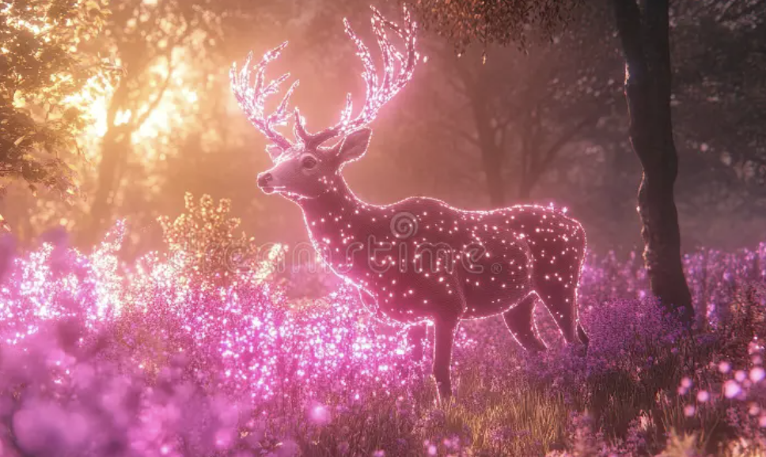

Deer are herbivorous mammals belonging to the family Cervidae, known for their graceful appearance and antlers, which are typically found on males. As mammals, deer are warm-blooded, give birth to live young, and nurse their offspring with milk produced by mammary glands. They have a four-chambered stomach, which allows them to efficiently digest tough plant materials like leaves, twigs, and grasses. Deer are found in a variety of habitats around the world, including forests, grasslands, and wetlands. Their keen senses of hearing and smell help them detect predators, while their strong legs enable them to run quickly and leap great distances to escape danger.
Cheetahs are remarkable mammals known for being the fastest land animals, capable of reaching speeds up to 70 miles per hour in short bursts. As mammals, they give birth to live young and nurse them with milk produced by the mother. Cheetahs have a slender, aerodynamic body, long legs, and a flexible spine that helps them run at high speeds. They belong to the felid family and are primarily found in parts of Africa. Unlike other big cats, cheetahs cannot roar, but they communicate through chirps, purrs, and hisses. Their keen eyesight helps them hunt during the day, making them unique among many nocturnal predators.
Koalas are mammals, a class of animals characterized by features such as having fur or hair and, most importantly, nursing their young with milk produced by mammary glands. Native to Australia, koalas are marsupials, a subgroup of mammals known for giving birth to underdeveloped young that continue to grow in a pouch. A newborn koala, called a joey, is tiny, blind, and hairless at birth, and it crawls into its mother’s pouch to nurse and develop for several months. Like all mammals, koalas are warm-blooded and have a backbone. Their thick fur, strong limbs, and tree-dwelling habits help them thrive in eucalyptus forests, where they feed almost exclusively on eucalyptus leaves.